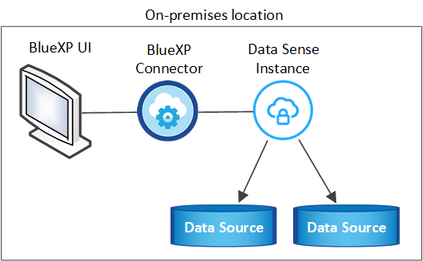
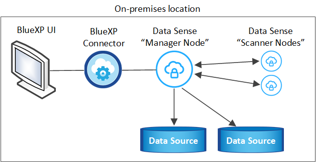

Dokumentationsänderungen beantragen
Dokumentationsänderungen beantragen In GitHub bearbeiten
In GitHub bearbeiten Leitfaden für Beitragende
Leitfaden für BeitragendeCloud-Daten lokal sinnvoll nutzen ohne Internetzugang
Beitragende
Führen Sie ein paar Schritte zu implementieren Cloud Data Sense auf einem Host in einer On-Premises-Website, die keinen Internetzugang hat. Diese Art der Installation ist perfekt für Ihre sicheren Standorte.
Beachten Sie, dass Sie auch können "Implementieren Sie Data Sense in einer lokalen Website mit Internetzugang".
Unterstützte Datenquellen
Bei Installation auf diese Weise (manchmal auch als „offline“ oder „Dark“-Website bezeichnet) kann Data Sense Daten nur aus Datenquellen scannen, die auch lokal auf dem lokalen Standort vorhanden sind. Zu diesem Zeitpunkt kann Data Sense die folgenden lokalen Datenquellen scannen:
-
On-Premises ONTAP Systeme
-
Datenbankschemas
-
SharePoint On-Premises-Accounts (SharePoint Server)
-
NFS- oder CIFS-Dateifreigaben anderer Anbieter
-
Objekt-Storage, der das Simple Storage Service (S3)-Protokoll verwendet
Für besondere Situationen, in denen Sie eine sehr sichere BlueXP-Installation benötigen, aber auch lokale Daten von OneDrive-Konten oder SharePoint Online-Konten scannen möchten, können Sie das Data Sense Offline-Installationsprogramm verwenden und einigen ausgewählten Endpunkten den Internet-Zugriff gewähren. Siehe Spezielle Anforderungen für SharePoint und OneDrive Entsprechende Details.
Derzeit werden die Konten von Cloud Volumes ONTAP, Azure NetApp Files, FSX für ONTAP, AWS S3 oder Google Drive nicht unterstützt, wenn Daten Sense in einer dunklen Site eingesetzt wird.
Einschränkungen
Die meisten Funktionen von Data Sense funktionieren, wenn sie in einer Site ohne Internetzugang bereitgestellt werden. Bestimmte Funktionen, für die ein Internetzugang erforderlich ist, werden jedoch nicht unterstützt, z. B.:
-
Verwalten von Etiketten in Microsoft Azure Information Protection (AIP)
-
Senden von E-Mail-Warnungen an BlueXP-Benutzer, wenn bestimmte kritische Richtlinien Ergebnisse liefern
-
Festlegen von BlueXP-Rollen für unterschiedliche Benutzer (z. B. Account Admin oder Compliance Viewer)
-
Kopieren und Synchronisieren von Quelldateien mit Cloud Sync
-
Benutzerfeedback wird empfangen
-
Automatisierte Software-Upgrades von BlueXP
Sowohl BlueXP Connector als auch Data Sense erfordern regelmäßige manuelle Upgrades, um neue Funktionen zu ermöglichen. Die Data Sense-Version finden Sie unten auf den Data Sense-UI-Seiten. Prüfen Sie die "Cloud Data Sense – Versionsinformationen" Um sich die neuen Funktionen in jeder Version und deren Wunsch nach jenen Funktionen ansehen zu können. Anschließend können Sie die Schritte befolgen Aktualisieren Sie Ihre Data Sense Software.
Schnellstart
Führen Sie diese Schritte schnell durch, oder scrollen Sie nach unten zu den verbleibenden Abschnitten, um ausführliche Informationen zu erhalten.
 Installieren Sie den BlueXP-Anschluss
Installieren Sie den BlueXP-AnschlussWenn Sie noch keinen Connector an Ihrem Offline-Standort installiert haben, "Den Stecker einsetzen" Jetzt auf einem Linux-Host.
 Prüfen Sie die Voraussetzungen für den Data Sense
Prüfen Sie die Voraussetzungen für den Data SenseStellen Sie sicher, dass Ihr Linux-System die erfüllt Host-Anforderungen erfüllt, Dass es alle erforderliche Software installiert hat, und dass Ihre Offline-Umgebung die erforderlichen erfüllt Berechtigungen und Konnektivität.
 Laden Sie Data Sense herunter und implementieren Sie es
Laden Sie Data Sense herunter und implementieren Sie esLaden Sie die Cloud Data Sense Software von der NetApp Support Site herunter, und kopieren Sie die Installer-Datei auf den Linux-Host, den Sie verwenden möchten. Starten Sie dann den Installationsassistenten, und befolgen Sie die Anweisungen zur Bereitstellung der Cloud Data Sense Instanz.
 Abonnieren Sie den Cloud Data Sense Service
Abonnieren Sie den Cloud Data Sense ServiceDie ersten 1 TB an Daten, die Cloud Data Sense in BlueXP scannt, sind kostenlos. Nach diesem Zeitpunkt ist eine BYOL-Lizenz von NetApp erforderlich, um das Scannen von Daten fortzusetzen.
Installieren Sie den BlueXP-Anschluss
Wenn Sie noch keinen BlueXP Connector an Ihrem lokalen Offline-Standort installiert haben, "Den Stecker einsetzen" Auf einem Linux-Host in Ihrer Offline-Site.
Bereiten Sie das Linux-Hostsystem vor
Data Sense Software muss auf einem Host ausgeführt werden, der bestimmte Betriebssystemanforderungen, RAM-Anforderungen, Softwareanforderungen usw. erfüllt. Data Sense wird auf einem Host, der für andere Anwendungen freigegeben ist, nicht unterstützt - der Host muss ein dedizierter Host sein.
-
Betriebssystem: Red hat Enterprise Linux oder CentOS Versionen 8.0 bis 8.6
-
Version 7.8 oder 7.9 kann verwendet werden, aber die Linux-Kernel-Version muss 4.0 oder höher sein
-
Das Betriebssystem muss in der Lage sein, die Docker Engine zu installieren
-
-
Disk: SSD mit 500 gib erhältlich auf /, oder
-
100 gib verfügbar auf /opt
-
400 gib verfügbar auf /var
-
5 gib auf /tmp
-
-
RAM: 64 GB (Swap-Speicher muss auf dem Host deaktiviert sein)
-
CPU: 16 Kerne
Beachten Sie, dass Sie Daten Sense auf einem System mit weniger CPUs und weniger RAM implementieren können, es gibt jedoch Einschränkungen bei der Verwendung dieser Systeme. Siehe "Verwenden eines kleineren Instanztyps" Entsprechende Details.
-
Zusätzliche Software: Sie müssen die folgende Software auf dem Host installieren, bevor Sie Data Sense installieren:
-
Docker Engine Version 19 oder höher. "Installationsanweisungen anzeigen".
-
Python 3 Version 3.6 oder höher. "Installationsanweisungen anzeigen".
-
-
Firewalld Überlegungen: Wenn Sie planen zu verwenden
firewalld, Wir empfehlen, dass Sie es aktivieren, bevor Sie Data Sense installieren. Führen Sie die folgenden Befehle zum Konfigurieren ausfirewalldDamit es mit Data Sense kompatibel ist:firewall-cmd --permanent --add-service=http firewall-cmd --permanent --add-service=https firewall-cmd --permanent --add-service=mysql firewall-cmd --permanent --add-port=80/tcp firewall-cmd --permanent --add-port=8080/tcp firewall-cmd --permanent --add-port=443/tcp firewall-cmd --permanent --add-port=555/tcp firewall-cmd --permanent --add-port=3306/tcp firewall-cmd --reload
Wenn Sie aktivieren
firewalldNach der Installation von Data Sense müssen Sie den Docker neu starten.

|
Die IP-Adresse des Data Sense Hostsystems kann nach der Installation nicht geändert werden. |
Überprüfen Sie die Voraussetzungen für BlueXP und Data Sense
Prüfen Sie die folgenden Voraussetzungen, um sicherzustellen, dass Sie über eine unterstützte Konfiguration verfügen, bevor Sie Cloud Data Sense implementieren.
-
Stellen Sie sicher, dass der Connector über die Berechtigungen zum Bereitstellen von Ressourcen verfügt und Sicherheitsgruppen für die Cloud Data Sense Instanz erstellt. Die neuesten BlueXP-Berechtigungen finden Sie in "Die von NetApp bereitgestellten Richtlinien".
-
Sorgen Sie dafür, dass Cloud Data Sense ausgeführt wird. Die Cloud Data Sense Instanz muss kontinuierlich ausgeführt werden, um Ihre Daten kontinuierlich zu scannen.
-
Stellen Sie sicher, dass Webbrowser mit Cloud Data Sense verbunden ist. Wenn Cloud Data Sense aktiviert ist, stellen Sie sicher, dass Benutzer von einem Host, der über eine Verbindung zur Data Sense Instanz verfügt, auf die BlueXP-Schnittstelle zugreifen.
Die Instanz Data Sense verwendet eine private IP-Adresse, um sicherzustellen, dass die indizierten Daten für andere nicht zugänglich sind. Daher muss der Webbrowser, den Sie für den Zugriff auf BlueXP verwenden, über eine Verbindung mit dieser privaten IP-Adresse verfügen. Diese Verbindung kann von einem Host stammen, der sich im gleichen Netzwerk wie die Data Sense Instanz befindet.
Vergewissern Sie sich, dass alle erforderlichen Ports aktiviert sind
Sie müssen sicherstellen, dass alle erforderlichen Ports für die Kommunikation zwischen Connector, Data Sense, Active Directory und Ihren Datenquellen offen sind.
| Verbindungstyp | Ports | Beschreibung |
|---|---|---|
Connector <> Data Sense |
8080 (TCP), 443 (TCP) und 80 |
Die Sicherheitsgruppe für den Connector muss ein- und ausgehenden Datenverkehr über Port 443 zu und aus der Instanz Data Sense zulassen. Stellen Sie sicher, dass Port 8080 geöffnet ist, damit Sie den Installationsfortschritt in BlueXP sehen können. |
Connector <> ONTAP-Cluster (NAS) |
443 (TCP) |
BlueXP erkennt ONTAP-Cluster mithilfe von HTTPS. Wenn Sie benutzerdefinierte Firewall-Richtlinien verwenden, müssen diese die folgenden Anforderungen erfüllen:
|
Datensense <> ONTAP-Cluster |
|
Für den Datensense ist eine Netzwerkverbindung zu jedem Cloud Volumes ONTAP-Subnetz oder On-Prem ONTAP-System erforderlich. Sicherheitsgruppen für Cloud Volumes ONTAP müssen eingehende Verbindungen aus der Datensense-Instanz zulassen. Stellen Sie sicher, dass diese Ports für die Data Sense-Instanz offen sind:
NFS-Volume-Exportrichtlinien müssen den Zugriff aus der Data Sense Instanz zulassen. |
Datensinn <> Active Directory |
389 (TCP & UDP), 636 (TCP), 3268 (TCP) UND 3269 (TCP) |
Sie müssen bereits ein Active Directory für die Benutzer in Ihrem Unternehmen eingerichtet haben. Darüber hinaus benötigt Data Sense Active Directory-Anmeldeinformationen zum Scannen von CIFS-Volumes. Sie müssen über die folgenden Informationen für das Active Directory verfügen:
|
Wenn Sie mehrere Data Sense Hosts verwenden, um zusätzliche Verarbeitungsleistung für das Scannen Ihrer Datenquellen bereitzustellen, müssen Sie zusätzliche Ports/Protokolle aktivieren. "Siehe zusätzliche Anschlussanforderungen".
Spezielle Anforderungen für SharePoint und OneDrive
Wenn BlueXP und Data Sense in einer Site ohne Internetzugang bereitgestellt werden, können Sie Dateien in SharePoint Online- und OneDrive-Konten scannen, indem Sie für einige ausgewählte Endpunkte den Internetzugriff gewähren.
Lokal installierte SharePoint-Konten vor Ort können ohne Internetzugang gescannt werden.
| Endpunkte | Zweck |
|---|---|
\login.microsoft.com \graph.microsoft.com |
Kommunikation mit Microsoft-Servern zur Anmeldung beim ausgewählten Online-Dienst. |
https://api.bluexp.netapp.com |
Kommunikation mit dem BlueXP Service, einschl. NetApp Accounts |
Der Zugriff auf api.bluexp.netapp.com ist nur während der ersten Verbindung zu diesen externen Diensten erforderlich.
Sinnvolle Implementierung Von Daten
Für typische Konfigurationen installieren Sie die Software auf einem einzigen Host-System. "Siehe diese Schritte hier".

Bei sehr großen Konfigurationen, bei denen Sie Petabyte an Daten scannen, können Sie mehrere Hosts einschließen, um zusätzliche Verarbeitungsleistung zu schaffen. "Siehe diese Schritte hier".

Installation mit einem Host für typische Konfigurationen
Führen Sie diese Schritte aus, wenn Sie die Data Sense Software auf einem einzelnen lokalen Host in einer Offline-Umgebung installieren.
-
Vergewissern Sie sich, dass Ihr Linux-System die erfüllt Host-Anforderungen erfüllt.
-
Vergewissern Sie sich, dass Sie die beiden erforderlichen Softwarepakete (Docker Engine und Python 3) installiert haben.
-
Stellen Sie sicher, dass Sie über Root-Rechte auf dem Linux-System verfügen.
-
Vergewissern Sie sich, dass die erforderliche Offline-Umgebung erfüllt ist Berechtigungen und Konnektivität.
-
Laden Sie auf einem internetkonfigurierten System die Cloud Data Sense-Software aus dem herunter "NetApp Support Website". Die ausgewählte Datei heißt DataSense-offline-Bundle-<Version>.tar.gz.
-
Kopieren Sie das Installationspaket auf den Linux-Host, den Sie für die dunkle Seite verwenden möchten.
-
Entpacken Sie das Installationspaket auf dem Hostcomputer, z. B.:
tar -xzf DataSense-offline-bundle-v1.16.1.tar.gzDiese extrahiert erforderliche Software und die eigentliche Installationsdatei DATASENSE-INSTALLER-V1.16.1.tar.gz.
-
Starten Sie BlueXP, und wählen Sie Governance > Klassifizierung.
-
Klicken Sie Auf Datensense Aktivieren.

-
Klicken Sie auf Bereitstellen, um den Assistenten für die lokale Bereitstellung zu starten.

-
Kopieren Sie im Dialogfeld Deploy Data Sense on premise den angegebenen Befehl und fügen Sie ihn in eine Textdatei ein, damit Sie ihn später verwenden können, und klicken Sie auf Schließen. Beispiel:
sudo ./install.sh -a 12345 -c 27AG75 -t 2198qq --darksite -
Entpacken Sie die Installationsdatei auf dem Host-Rechner, z. B.:
tar -xzf DATASENSE-INSTALLER-V1.16.1.tar.gz -
Wenn Sie vom Installationsprogramm dazu aufgefordert werden, können Sie die erforderlichen Werte in eine Reihe von Eingabeaufforderungen eingeben oder Sie können die erforderlichen Parameter als Befehlszeilenargumente dem Installer angeben:
Beachten Sie, dass das Installationsprogramm eine Vorprüfung durchführt, um sicherzustellen, dass Ihre System- und Netzwerkanforderungen für eine erfolgreiche Installation erfüllt werden.
Geben Sie die Parameter wie aufgefordert ein: Geben Sie den vollständigen Befehl ein: -
Fügen Sie die Informationen ein, die Sie aus Schritt 7 kopiert haben:
sudo ./install.sh -a <account_id> -c <agent_id> -t <token> --darksite -
Geben Sie die IP-Adresse oder den Hostnamen des Data Sense Host-Rechners ein, damit auf diese durch die Connector-Instanz zugegriffen werden kann.
-
Geben Sie die IP-Adresse oder den Hostnamen des BlueXP Connector-Hostcomputers ein, damit die Instanz Data Sense darauf zugreifen kann.
Alternativ können Sie den gesamten Befehl vorab erstellen und die erforderlichen Host-Parameter bereitstellen:
sudo ./install.sh -a <account_id> -c <agent_id> -t <token> --host <ds_host> --manager-host <cm_host> --no-proxy --darksiteVariablenwerte:
-
Account_id = NetApp Konto-ID
-
Agent_id = Konnektor-ID
-
Token = jwt-Benutzer-Token
-
ds_Host = IP-Adresse oder Hostname des Data Sense Linux-Systems.
-
Cm_Host = IP-Adresse oder Hostname des BlueXP Connector-Systems.
-
Das Data Sense Installationsprogramm installiert Pakete, registriert die Installation und installiert Data Sense. Die Installation dauert 10 bis 20 Minuten.
Wenn zwischen dem Host-Rechner und der Connector-Instanz eine Verbindung über Port 8080 besteht, sehen Sie den Installationsfortschritt auf der Registerkarte Data Sense in BlueXP.
Auf der Konfigurationsseite können Sie das lokale auswählen "ONTAP-Cluster vor Ort" Und "Datenbanken" Die Sie scannen möchten.
Das können Sie auch "Byol-Lizenzierung für Cloud-Data Sense einrichten" Derzeit auf der Seite „Digital Wallet“. Sie werden erst berechnet, wenn die Datenmenge mehr als 1 TB beträgt.
Installation mit mehreren Hosts für große Konfigurationen
Bei sehr großen Konfigurationen, bei denen Sie Petabyte an Daten scannen, können Sie mehrere Hosts einschließen, um zusätzliche Verarbeitungsleistung zu schaffen. Bei der Verwendung mehrerer Hostsysteme wird das primäre System als Manager-Node bezeichnet, und die zusätzlichen Systeme, die zusätzliche Rechenleistung bieten, heißen Scanner-Nodes.
Führen Sie die folgenden Schritte aus, wenn Sie Data Sense Software auf mehreren lokalen Hosts in einer Offline-Umgebung installieren.
-
Stellen Sie sicher, dass alle Linux-Systeme für den Manager- und Scanner-Knoten den entsprechen Host-Anforderungen erfüllt.
-
Vergewissern Sie sich, dass Sie die beiden erforderlichen Softwarepakete (Docker Engine und Python 3) installiert haben.
-
Stellen Sie sicher, dass Sie auf den Linux-Systemen über Root-Rechte verfügen.
-
Vergewissern Sie sich, dass die erforderliche Offline-Umgebung erfüllt ist Berechtigungen und Konnektivität.
-
Sie müssen über die IP-Adressen der zu verwendenden Scanner-Knoten-Hosts verfügen.
-
Die folgenden Ports und Protokolle müssen auf allen Hosts aktiviert sein:
Port Protokolle Beschreibung 2377
TCP
Cluster-Management-Kommunikation
7946
TCP, UDP
Kommunikation zwischen den Knoten
4789
UDP
Overlay-Netzwerk-Traffic
50
ESP
Verschlüsselter ESP-Datenverkehr (IPsec Overlay Network)
111
TCP, UDP
NFS-Server für die gemeinsame Nutzung von Dateien zwischen den Hosts (benötigt von jedem Scanner-Knoten zu Manager-Knoten)
2049
TCP, UDP
NFS-Server für die gemeinsame Nutzung von Dateien zwischen den Hosts (benötigt von jedem Scanner-Knoten zu Manager-Knoten)
-
Befolgen Sie die Schritte 1 bis 8 vom "Installation über einen Host" Auf dem Knoten Manager.
-
Wie in Schritt 9 gezeigt, können Sie bei Aufforderung durch das Installationsprogramm die erforderlichen Werte in eine Reihe von Eingabeaufforderungen eingeben oder die erforderlichen Parameter als Befehlszeilenargumente für das Installationsprogramm bereitstellen.
Zusätzlich zu den Variablen, die für eine Installation mit einem Host verfügbar sind, wird eine neue Option -n <Node_ip> verwendet, um die IP-Adressen der Scannerknoten anzugeben. Mehrere Knoten-IPs werden durch Komma getrennt.
Mit diesem Befehl werden beispielsweise 3 Scannerknoten hinzugefügt:
sudo ./install.sh -a <account_id> -c <agent_id> -t <token> --host <ds_host> --manager-host <cm_host> -n <node_ip1>,<node_ip2>,<node_ip3> --no-proxy --darksite -
Bevor die Installation des Manager-Node abgeschlossen ist, wird in einem Dialogfeld der für die Scanner-Knoten erforderliche Installationsbefehl angezeigt. Kopieren Sie den Befehl und speichern Sie ihn in einer Textdatei. Beispiel:
sudo ./node_install.sh -m 10.11.12.13 -t ABCDEF-1-3u69m1-1s35212 -
Auf * jedem Scanner-Knoten-Host:
-
Kopieren Sie die Data Sense Installer-Datei (DATASENSE-INSTALLER-<Version>.tar.gz) auf den Host-Rechner.
-
Entpacken Sie die Installationsdatei.
-
Fügen Sie den Befehl ein, den Sie in Schritt 3 kopiert haben, und führen Sie ihn aus.
Wenn die Installation auf allen Scanner-Knoten abgeschlossen ist und sie mit dem Manager-Knoten verbunden wurden, wird auch die Installation des Manager-Knotens abgeschlossen.
-
Das Installationsprogramm von Cloud Data Sense beendet die Installation von Paketen und registriert die Installation. Die Installation dauert 15 bis 25 Minuten.
Auf der Konfigurationsseite können Sie das lokale auswählen "ONTAP-Cluster vor Ort" Und lokal "Datenbanken" Die Sie scannen möchten.
Das können Sie auch "Byol-Lizenzierung für Cloud-Data Sense einrichten" Derzeit auf der Seite „Digital Wallet“. Sie werden erst berechnet, wenn die Datenmenge mehr als 1 TB beträgt.
Upgrade von Data Sense Software
Da die Software Data Sense regelmäßig mit neuen Funktionen aktualisiert wird, sollten Sie sich regelmäßig auf eine neue Version verlassen, um sicherzustellen, dass Sie die neueste Software und Funktionen verwenden. Sie müssen die Software Data Sense manuell aktualisieren, da keine Internetverbindung vorhanden ist, um das Upgrade automatisch durchzuführen.
-
Die Software Data Sense kann jeweils eine Hauptversion aktualisiert werden. Wenn beispielsweise Version 1.15.x installiert ist, können Sie nur auf 1.16.x aktualisieren Wenn Sie einige Hauptversionen hinter sich haben, müssen Sie die Software mehrmals aktualisieren.
-
Stellen Sie sicher, dass Ihre On-Prem Connector-Software auf die neueste verfügbare Version aktualisiert wurde. "Siehe die Schritte zur Aktualisierung des Connectors".
-
Laden Sie auf einem internetkonfigurierten System die Cloud Data Sense-Software aus dem herunter "NetApp Support Website". Die ausgewählte Datei heißt DataSense-offline-Bundle-<Version>.tar.gz.
-
Kopieren Sie das Software-Bundle auf den Linux-Host, auf dem Data Sense im dunklen Ort installiert ist.
-
Entpacken Sie das Software-Bundle auf dem Host-Rechner, zum Beispiel:
tar -xvf DataSense-offline-bundle-v1.16.1.tar.gzDiese extrahiert die Installationsdatei DATASENSE-INSTALLER-V1.16.1.tar.gz.
-
Entpacken Sie die Installationsdatei auf dem Host-Rechner, z. B.:
tar -xzf DATASENSE-INSTALLER-V1.16.1.tar.gzDadurch wird das Upgrade-Skript Start_darchsite_Upgrade.sh und jede erforderliche Software von Drittanbietern extrahiert.
-
Führen Sie das Upgrade-Skript auf dem Hostcomputer aus, z. B.:
start_darksite_upgrade.sh
Die Software Data Sense wird auf Ihrem Host aktualisiert. Die Aktualisierung kann 5 bis 10 Minuten dauern.
Beachten Sie, dass auf den Scanner-Knoten kein Upgrade erforderlich ist, wenn Sie Data Sense auf mehreren Hostsystemen zum Scannen sehr großer Konfigurationen implementiert haben.
Sie können überprüfen, ob die Software aktualisiert wurde, indem Sie die Version unten auf den Seiten der Data Sense-Benutzeroberfläche prüfen.